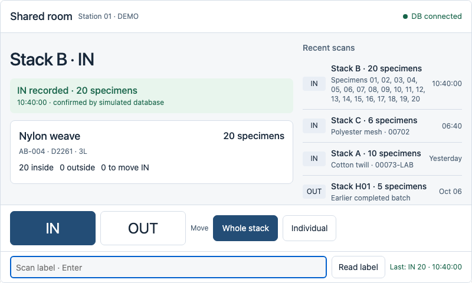
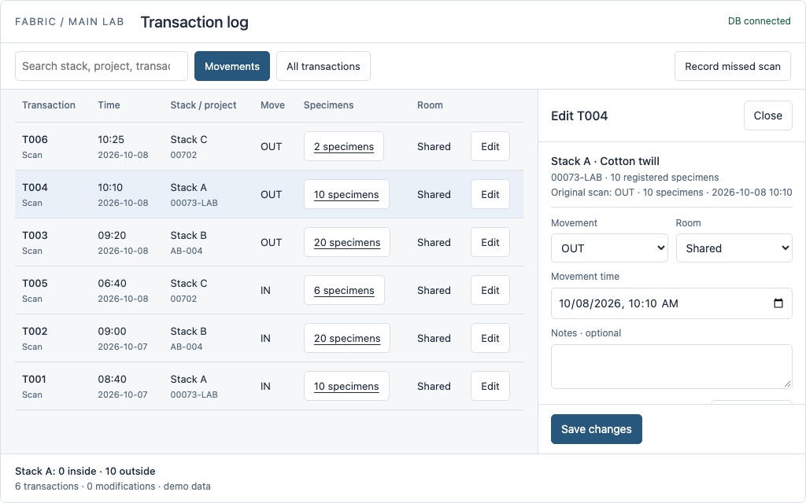

Latest: focused bottom-dock scanner and popup editor with integer specimen IDs →
Same work. Different screen layouts.
Two independent sets: room scanning on the 7-inch touchscreen, and transaction editing at staff desktops. Choose a scanner layout and a log layout separately.
Room scanner

Persistent IN/OUT, whole-stack or individual scope, visible database status, and recent scans. Six layouts record immediately; two let you scan, then act. Toolbars stay visible as the middle scrolls.
Compare scanner layouts Open the 800 × 480 USB-scanner demoTransaction log

Find a movement, change its numbered specimens, time, room or notes, or cancel a mistaken scan. Counts follow the selected specimens. Notes are optional; there are no approval or permission screens.
Compare log layouts On-screen and letter-size printable demo QR labelsRoom touchscreen + USB scanner → shared backend/database ← main-lab staff computers for prep, labels and log editing. These demos simulate that connection locally. Every result, movement and modification is demo data.
Scanner layouts
Bottom dock
Large IN/OUT buttons and scope at the bottom; room and connection at the top. A straightforward touch layout with a short reach to the main controls.
Top controls
Direction stays beside the room header; scope stays at the bottom. The current direction is prominent before looking at the scan result.
Side controls
Large vertical IN/OUT buttons in a left rail, with a scrolling content area to the right. Gives the direction controls a distinct, stable location.
History rail
Scan result on the left, independently scrolling recent scans on the right. Keeps a quick visual trail beside the current work.
History first
A compact fixed receipt above a large transaction list, with the direction dock below. Prioritizes checking what just happened.
Receipt header
Direction and temporary confirmation live near the top, scope at the bottom, and history in between. Keeps immediate feedback outside the scrolling area.
Review card
Scan to identify the stack and see its counts, then press Record. Persistent direction and scope remain in the bottom dock.
Review bar
Direction at the top, reviewed stack and history in the middle, and an explicit Record action at the bottom. A different placement for the same scan-then-act behavior.
Log layouts
Table and popup
A familiar transaction table; Edit opens a focused popup. The main log stays visually simple.
Side inspector
The selected transaction opens beside the table. You can compare the row with its editing fields without covering the surrounding log.
Inline row editor
Expand the editing controls directly under the selected transaction. Keeps the change attached to its place in the log.
Direct cells
Edit a row's time, direction and room in place; click its specimen count for a selection popup. Save or discard from the fixed footer.
Expanded specimens
Expand a stack transaction into numbered specimen rows. Useful for checking exactly which individual movements are included.
Table and JSON
Select a transaction and edit its structured payload beside the table. Shows how numbered specimen arrays and log modifications could feed a later audit generator.
Try the same examples in different layouts
Scanner: Stack A has 10 specimens already inside. Select OUT and scan it. For a partial removal, reset, select Individual, scan A and choose 01–03. Then scan A in Whole stack mode: the remaining 7 leave. Stack B has 20 outside; Stack C has 6 inside for only 4 hours.
Log: Edit T004 from 10 OUT to specimens 01–03. The current result becomes 7 inside, 3 outside. Switch to All transactions to see the modification event. Alternatively, cancel T004 to undo the mistaken checkout.
The shared QR labels identify the stack; printed specimen numbers identify individuals in the selection popup. The demo label sheet also offers unique specimen QR codes for comparison.